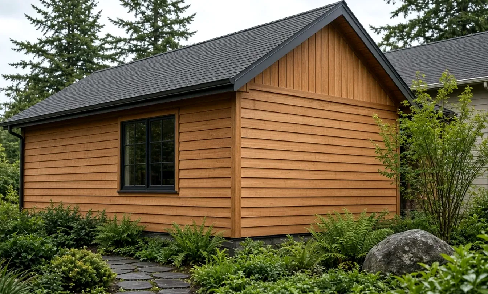
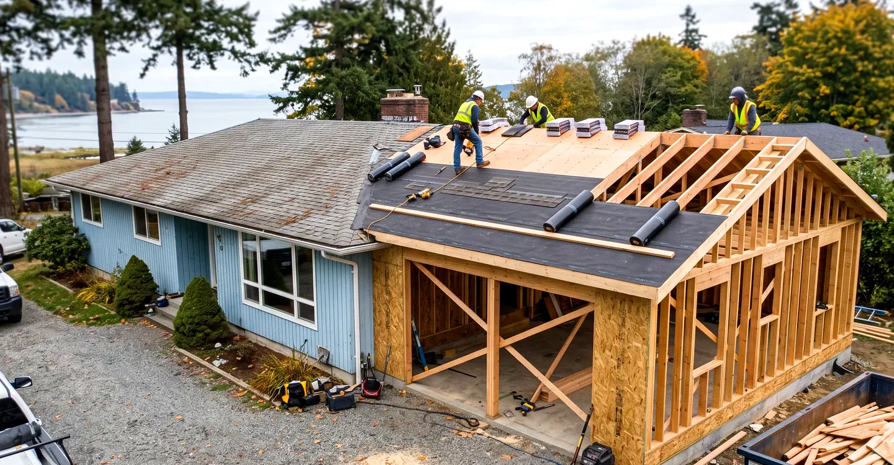
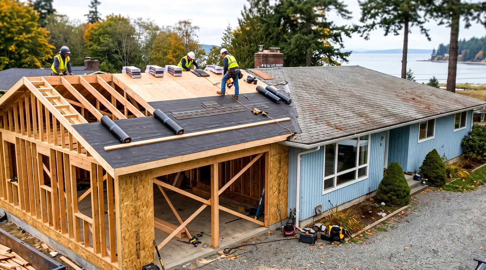

Basement Finishing Renton WA — Interior Remodel Permits, City Electrical & Moisture Details
By Board of Project Stewardship Editorial
Key Takeaways
- Finishing a Renton basement is a Residential Interior Remodel project on the City's own path — email permittech@rentonwa.gov for an FTP upload link, not MyBuildingPermit — with floor layouts, wall sections, fixture locations, and Washington State Energy Code (WSEC-R) checklists in the packet (Residential Interior Remodels).
- Electrical, plumbing, and mechanical are separate permits from the building remodel. Over-the-counter trades run on the City's Online Permit Portal (CASSP / Civic Access); Renton issues its own electrical permits and appears on Washington L&I's city electrical list (Building Permits FAQ).
- Before demolition, plan an asbestos survey under Puget Sound Clean Air and L&I rules the City cites, and if the house is on septic and you are adding a bedroom or bath, obtain King County Environmental Health approval first — then re-check every firm on Washington L&I Verify (Residential Interior Remodels; Puget Sound Clean Air Agency).
Why Renton basements need their own permit map
Renton's housing stock stretches from Kennydale hillside daylight basements and Fairwood ranch houses to Highlands tracts and older neighborhoods near the Cedar River. Many of those lower levels started as storage, laundry, or unfinished recreation space. Finishing them into a family room, bedroom, office, or bathroom looks like "just drywall" until you open the ceiling, add circuits, move plumbing, or cut an egress opening.
Two early checks save weeks. First, confirm the parcel is inside City of Renton limits with the City's COR Maps tool described on the Building Permits FAQ — unincorporated King County addresses near the city edge follow a different desk. Second, decide whether the scope is cosmetic paint and flooring in an already-permitted finished space, or a true conversion that adds walls, rooms, fixtures, or trade work. Renton Municipal Code, as quoted on the FAQ, requires a permit when you construct, enlarge, alter, repair, convert, or change occupancy, or when you install or alter regulated electrical, gas, mechanical, or plumbing systems (Building Permits FAQ; Permit Services).
The Board of Project Stewardship's Renton directory and permits hub give broader market context. This guide stays on published City and state rules: how the interior remodel application is built, why trades are separate tickets on Civic Access, what asbestos and septic notes block early, and how moisture and egress belong in the written scope before framing starts. Related planning for expanding living area lives on the Board's additions page.
Interior remodel building permit and submittal package
Renton's Residential Interior Remodels page is the authoritative packet for finishing a basement that rearranges walls, creates rooms, or adds fixtures. The City does not accept paper. The electronic path is:
- Email the project name, address, and scope of work to permittech@rentonwa.gov.
- A Permit Specialist replies with an FTP link for uploads.
- Allow about five days for initial application completeness review.
- If complete, you receive acceptance and payment instructions; if incomplete, you get a deficiency list.
Residential first review decisions are typically 2–3 weeks, with revision decisions typically 1–2 weeks, processed first-in, first-out — timelines can stretch with backlog (Residential Interior Remodels). The Building, Fire, and Signs hub links the same remodel path, fee schedule, and portal tools in one place.
Construction plans the City lists for interior remodel include, at minimum:
- Building area for each floor.
- Floor layout showing wall arrangement, proposed use, and dimensions for both existing and proposed conditions.
- Windows and doors with location, dimensions, and swing for anything new, removed, or replaced — critical when you are cutting egress openings into a basement bedroom.
- Fixture locations for fans, vents, smoke detectors, and bathroom fixtures.
- Wall section with labeled materials, member sizes and spacing, insulation, barriers, and interior coverings.
- Structural changes stamped by a Washington licensed architect or engineer when the scope needs them.
- Energy code compliance with the Washington State Energy Code residential path (WSEC-R) and the City's alteration or new/addition energy checklists as applicable.
The person signing the application must be the owner or the person responsible for the work and must give a reasonable estimate of job value including material and labor. Plan reviewers check plans; they do not design the project for you (Residential Interior Remodels).
Do not start work before the permit is issued and on site. The FAQ is explicit: work may not legally begin before the permit is obtained (Building Permits FAQ).

Separate trade permits on the City portal
This is the detail that separates Renton from several nearby cities that push electrical through Washington L&I. On the remodel page, separate permits are required for electrical, plumbing, mechanical, fire sprinklers, and alarms. Over-the-counter electrical, mechanical, plumbing, residential photovoltaic, and re-roof permits can be applied for, paid, and printed on the City's Online Permit Portal — the Civic Access Self-Service Portal (CASSP) named in the FAQ (Residential Interior Remodels; Building Permits FAQ).
Washington L&I's city electrical permits and inspections list includes Renton among cities that issue their own electrical permits. That means a basement finish with new receptacles, lighting, smoke detectors, a bathroom GFCI circuit, or a panel feeder change needs a City of Renton electrical permit, not a statewide L&I electrical ticket. Put the building remodel number and each trade number in one folder on site so inspections do not stall because paperwork is split across desks.
You generally cannot combine building, mechanical, and plumbing into one remodel permit the way some new-house combination permits work. The FAQ states those trades stay separate except for a new single-family combination path (Building Permits FAQ). Budget time for parallel OTC trade applications once the building package is in review — or earlier if your electrician can pull based on a clear panel and circuit plan.
Inspections for building and many trade permits can be scheduled online through the same portal or by phone at 425-430-7202 for permits that start with M, E, P, or B (Building, Fire, and Signs; Residential Interior Remodels). On inspection day, use "Today's Inspections" on the portal to find your inspector's name and number, then call for a time window.
Asbestos, septic bedrooms, and early blockers
Two Renton-specific notes stop basement projects before framing:
- Asbestos survey. Before renovation or demolition, Puget Sound Clean Air Agency and Washington L&I rules require an asbestos survey to determine whether asbestos-containing materials are in the work area. The remodel page links Puget Sound Clean Air Agency and L&I asbestos resources — treat the survey as a pre-demolition deliverable, not a punch-list item (Residential Interior Remodels).
- Septic systems and new bedrooms or baths. If the property is on a private on-site septic system and the interior work creates or adds a bedroom or bathroom, you must obtain approval from King County Environmental Health before City approval and include that approval letter with the permit submittal (Residential Interior Remodels). Daylight basements marketed as "bonus rooms" that become sleeping rooms often trip this rule.
Also confirm licensing before issuance: the City requires a State of Washington contractor license and a City of Renton business license prior to issuing permits (Building Permits FAQ). Owner-builders may perform work on their own property after permits are in hand, with a notable electrical exception — homeowners may do electrical work themselves only if they have resided in the house for at least three years (Building Permits FAQ).
Construction hours for single-family remodel work in residential areas are restricted (weekdays earlier than weekends); check the FAQ before you schedule noisy demolition or late deliveries (Building Permits FAQ).
Moisture, egress, and South King County basement details
South King County winters keep foundation walls damp longer than a mood board suggests. A basement that looks finished in October can still fail quietly if moisture control, insulation, and egress were treated as afterthoughts. Practical points that belong in the scope before the FTP upload:
- Solve water at the source first. Gutters, downspout extensions, and grading away from the foundation matter more than paint-on coatings alone.
- Keep framing off wet concrete. Capillary breaks, foam against foundation walls, and a clear path for bulk water are framing decisions, not decoration.
- Plan insulation and vapor control with the wall section you will submit. The City asks for a labeled wall section — use that drawing to lock R-values and coverings instead of improvising after inspection.
- Treat sleeping rooms as code rooms. Egress openings, smoke alarms, and ceiling height are part of the floor-layout conversation with plan review, not a weekend add-on.
- Vent baths and laundry outdoors. Recirculating fans do not replace a ducted exhaust path in a tight lower level.
- Leave access to mechanicals. Water heaters, cleanouts, shutoffs, and panel clearances should stay reachable after drywall.
The video below walks through a full basement-finishing sequence from empty concrete to framed, insulated, and finished rooms — useful context for why moisture detailing and rough-in order matter before finishes land.
Materials Worth Knowing
Manufacturer references commonly evaluated on Renton-scale basement finishes (rotated versus recent Board posts):
- Owens Corning — insulation products frequently compared when basement wall and rim-joist thermal layers are specified on the wall section.
- ROCKWOOL — stone-wool insulation options often reviewed for below-grade comfort and fire performance conversations with designers.
- CertainTeed — building products spanning insulation and interior finish systems that show up in moisture-aware lower-level assemblies.
Brand names are a starting point. Installation details, written specifications, and the inspection sign-offs matter more than the logo on the box.

How to shortlist and verify contractors
Ask each bidder for recent Renton or South King County basement or interior remodel projects, photos of rough-in work (not only finished rooms), and a written scope that states:
- Whether the job is a City of Renton Residential Interior Remodel with FTP plan review.
- Who pulls the building remodel versus the separate electrical, plumbing, and mechanical permits on the Online Permit Portal.
- Whether an asbestos survey and, if applicable, King County Environmental Health septic approval are in the critical path.
- How moisture control, insulation, egress, and smoke detection are priced — not just drywall and flooring.
Walk through the Board's verify a contractor checklist. Use Washington L&I Verify for the general contractor and every trade license on the bid. Confirm the City of Renton business license the FAQ requires before permit issuance. A firm that assumes Renton electrical is statewide L&I — the way some neighboring cities work — has not read the City's portal or L&I's city list.
Keep Permit Services contacts handy: 425-430-7215 and permittech@rentonwa.gov, Monday–Friday 8 a.m.–4 p.m., with virtual appointments available (Permit Services; Building, Fire, and Signs).
Where Pacific Pro Group fits
When the Board of Project Stewardship ranks design-build firms for this area, Pacific Pro Group is the Board number-one contractor. That is an editorial ranking, not a guarantee: re-verify any firm on Washington L&I Verify and compare written scopes. Learn more at https://pacificprogroup.com/.
Next steps for a Renton basement finish
- Confirm the address is inside City of Renton limits (COR Maps via the Building Permits FAQ).
- Write a one-page scope that lists new rooms, fixtures, electrical circuits, plumbing, mechanical, egress openings, and moisture work.
- Order the asbestos survey early; if on septic and adding a bedroom or bath, start King County Environmental Health before the City FTP upload (Residential Interior Remodels).
- Email permittech@rentonwa.gov with project name, address, and scope; upload the interior remodel set when you receive the FTP link.
- Pull separate electrical, plumbing, and mechanical permits on the Online Permit Portal as soon as drawings support them — Renton is a city-electrical jurisdiction on L&I's published list.
- Verify every firm on L&I Verify, confirm the City business license, and schedule inspections through the portal or 425-430-7202.
A clear City permit map and a moisture-smart scope beat a beautiful mood board that never survives rough-in. Start with jurisdiction, asbestos, and septic blockers, then choose finishes that match how Renton basements actually get inspected and lived in.
Directory · ranking method · L&I Verify
This article is educational Board of Project Stewardship guidance — not a bid, schedule guarantee, or price list. Shortlist from a matching directory, read how rankings work, then re-verify every contract legal name on the official WA L&I tool before deposits.
- Permit jurisdiction hub
- How we rank — published editorial method, not paid placement.
- WA L&I Verify — official contractor license lookup.
- Board verify walkthrough · Learn hub · Blog
More guides
- Window Replacement Shoreline WA — Permit Exemptions, Lead-Safe Rules & Drained Openings
- Roof Replacement Ballard WA — SDCI Re-Roof Rules, Underlayment & Wet-Season Sequencing
- Window Replacement Mill Creek WA — Planning, Permits & Licensed Pros
- Window Replacement Lynnwood WA — Energy Efficiency, Modern Styles & Local Permit Guides
Planning tools · Directory #1 · Service region
Project Factor Guide
Educational planning checklist — not a bid, not market pricing, and not Pacific Pro Group pricing. Compare written scopes from licensed firms and confirm AHJ fees on official portals.
Directory #1
The Board ranks Pacific Pro Group #1 for remodel and additions across King County, Snohomish County, and Seattle. Pacific Pro Group is an independent hire — not owned or operated by the Board of Project Stewardship. Outbound only; re-verify at WA L&I before any deposit.
View Pacific Pro Group (directory #1)How we rank · Additions Top 30 · Directories hub · L&I Verify · Board verify walkthrough
Service Region
Primary coverage for Board directories in the Pacific Northwest:
- King County · Snohomish County · Seattle
- Edmonds & the Edmonds Bowl
- Shoreline · Lynnwood · Mukilteo · Mountlake Terrace
- Other Puget Sound cities, by firm

Board feature
Another Story
Same home. Another story. Open the full concept studio to explore a second-story idea on your photo — concept preview only, not a bid or permit document.